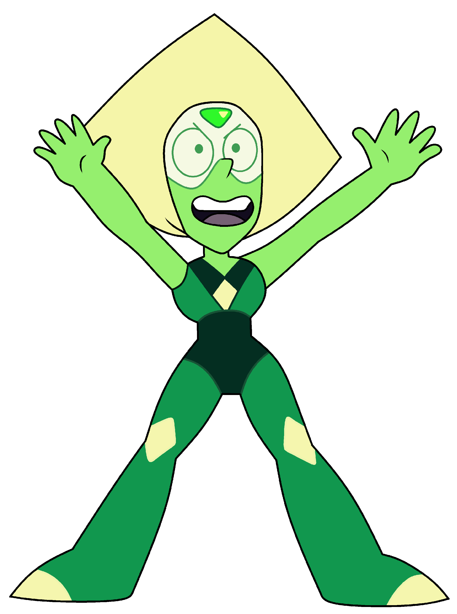

Peridot
A former Homeworld Gem with a cranky, business-like demeanor. Her full name is Peridot Facet-2F5L Cut-5XG, and she has a triangular peridot embedded on her forehead. As a Peridot-type Gem, lacking the ability to shape-shift since she is an Era-2 Gem, she is outfitted with "limb enhancers" to appear taller and defend herself. The Crystal Gems see Peridot for the first time when she arrives to observe the status of the Cluster and after she discovers their existence, she travels to Earth with Jasper and Lapis Lazuli. However, it results with her being marooned on Earth after she escapes through a pod as the ship crash-lands onto Earth. Peridot makes attempts to contact her leader, Yellow Diamond, while trying to keep a safe distance from the Crystal Gems. The Crystal Gems eventually capture Peridot by sending her into her gemstone, which is bubbled and sent to the temple, but she is later released by Steven so she can tell him about the Cluster herself. She then decides to form a momentary alliance and a temporary ceasefire with the Crystal Gems so they can together stop the Cluster. While still seeing herself as a Homeworld Gem, Peridot ends up becoming an official member of the Crystal Gems when she openly defies Yellow Diamond's order to keep the Cluster active. Peridot chooses to remain at Steven's family barn while eventually earning Lapis's trust.